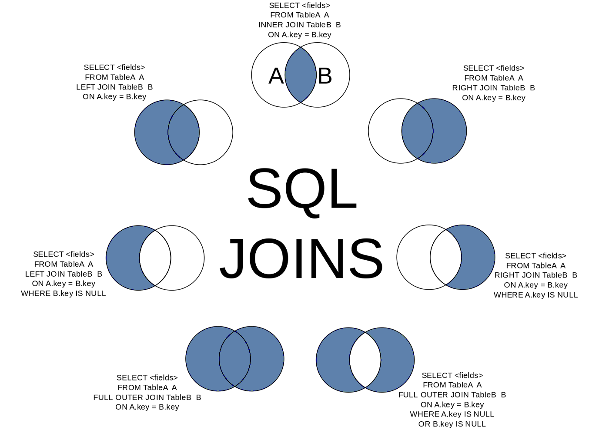

Remote Joins
Jed Rembold
February 5, 2025
Announcements
- Homework
- Did HW3 get submitted?
- Homework Solutions are being posted! You’ll need a password, which I will include as a comment to the last problem feedback.
- Homework 4 is posted
- Deadline adjustment! Tuesday or Wednesday nights? Vote in Discord!
- For next week, read:
- DeBarros: Ch 8
Connecting Remotely
Remote Sessions
An extremely useful aspect of working in a shell is the simplicity with which you can connect to other remote systems
The program usually used to do so is called
ssh, standing for “secure shell”To log into a remote server, the command looks something like:
ssh {user name}@{ip address or domain name}where
user nameis your user name on the remote server (which may be different than your local name)ip address or domain nameis either the direct ip address of the server (eg. 165.213.13.194) or the domain name (myserver.net)- Some servers may require a special port as well, which can be
indicated with
-p
Working Remotely
- Upon remote connection to a server, you will just end up in another shell, usually another Bash shell
- This is where being comfortable in a shell can really shine!
- Anything you could normally do in a shell, you can do here instead, but it happens on the remote system
- When you are done, you can type
exitto leave the remote connection and return to your local shell- Pay attention to your shell prompts! It is easy to get confused of if you are on the remote server or on your local system!
Executing commands directly
If you just need to run a quick command on the remote system, you can do so directly from
sshSimply add the desired command as the last
sshargumentssh username@server mycommand- This runs the command on the remote server, but then gets the stdout and brings it back to be displayed in your local stdout
- This means you could then pipe that output into a program that only exists locally on your system to further process the data!
Connecting Efficiently
Streamlining Security
- Entering in your account password each time isn’t onerous but can be
inconvenient
- It makes it impossible to schedule automatic tasks that would connect to a server, for instance
- Instead of a password, you can take advantage of an ssh
key, which uses a public/private key authentication system
- You generate (or use an existing) public and private key pair on your system
- You upload the public key to the server you want to be able to connect to
- The private key always stays only on your system. It is not shared!
Using Keys
To create a new key, you can use
ssh-keygen -t ed25519 -C {desc comment}- You will be asked for a passphrase for the key. You can go without and the key will still be much more secure than most password systems, but you could also add a passphrase necessary to “unlock” the key
- Two files will be created inside your
.sshfolder in your home directory: one with justid_ed25519and one withid_ed25519.pub
To copy the public key over to the desired server:
ssh-copy-id {username}@{servername}- You’ll need to enter in your password one more time, but then the key contents will be copied over
SSH Config
Often, you are connecting to the same servers again and again
- It would be nice not to have to repeat information about user name, server location, ports, etc
Instead, you can set up “profiles” in your
.ssh/configfileA general profile entry might look something like:
Host {profile_name} User {username} HostName {domain name or ip address} Port {port, if not default}There are more options and settings that can be configured. See
man ssh_config.
Connecting Transfers
Copy That
- One important thing that you might frequently need to do is copy files between your local system and remote server
- Here you have options
SSH +
tee: Theteecommand “splits” a stream, displaying it both to stdout and writing it to a file at the same time. You can thus do things like:cat local_file | ssh remote_server tee remote_fileusing normal pipes
scp: Thescpcommand combines normalcpandssh, allowing you to include a remote server in the standard formatscp local_file remote_server:remote_file
Sync it!
The previous options can be nice for just copying single files, but what if you need to copy over entire folders?
rsyncis probably your best optionrsync -avP local_folder/ remote_server:remote_path- Clever about what is transferred: only copying over necessary data that isn’t already present on the other system
- Can maintain file/folder permissions, links, etc
Common options
-ais for archive, and basically means: “make a perfect copy”-vis for verbose, to output more information as it is copied-Pis for partial and progress, so that partial transfers will resume and progress output to the screen
Your Turn!
I emailed you all earlier with a server address and login information. Use that to work through the following:
- SSH into the server using your information and change your password
using
passwd. Note that when you type in passwords on most shells, they will not show anything for security but are indeed recording what you type. - How many files are in your remote home directory initially? Some might be hidden!
- Exit out, and on your local system generate an SSH key. Copy the public key over to the server. Ensure you can log in to the server now without needing your server password!
- Set up a simple profile in your
.ssh/configfile to facilitate connecting to this server
Children Processes
- Whenever another program launches another, the program that is
launched is said to be a child process
- This includes any program launched from the shell being a child process of the shell itself!
- When a parent program is terminated, part of a “clean” termination
involves shutting down any child processes that were spawned by the
parent
- This helps prevent unnecessary or unwanted programs from continuing to run in the background and essentially doing nothing
- This can be unfortunate when remotely connecting, as it means you
can not leave a program running
- Running a multiplexer like tmux can assist with this
Break Time!
Break Time!
- Stretch! Eat! Don’t think about data for half an hour!
Selecting Across Tables
Linking Tables
- Our whole idea of breaking apart data across multiple tables was prefaced on the fact that we could pull it back together when needed
- There is nothing special about the linkages: we can link any rows that we want
- The act of collecting data from multiple tables based on particular rows and columns is called a join in SQL

Creating the Join
- A join pulls information from multiple tables into a new table (since all queries return a table)
- The columns that are matched across tables are called keys
- The general idea is then to:
- Set up your selection as usual from a single table
- Join to that table another table
- Specifying what columns in each table will act as keys along with a
conditional relating them
- Most common condition is equality
SELECT * FROM table_a
JOIN table_b
ON table_a.key_col = table_b.key_col;Column Names
- When you start refering to multiple table names in your query, you
might get overlapping column names
- Columns names must be unique within a table but might be the same across tables
- To avoid ambiguity, you can preface a column name with the table it is coming from, separated by a period
- This is useful both for selecting the join key columns, but also for selecting particular columns you want out of the joined table
SELECT tab1.name, tab1.age, tab2.name
FROM tab1
JOIN tab2 ON tab1.age = tab2.age;Cross Join
- Sometimes you want to see all the possible combinations
between the rows of two tables
- Sometimes called a cartesian product
- A
CROSS JOINwill return a table of all of these possibilities - Could imagine cross joining all the values with all the suits to generate your standard 52 card deck of playing cards.
- These can get very large very fast!
- Do not run on tables of millions of rows!
Cross Joins Visualized
(Inner) Join
- The basic join only keeps rows from table 1 and table 2 that matched
on the given column keys
- This is also called an inner join
- Essentially a cross join with a filter statement
- Any row in table 1 that had no counterpart in table 2 is left out
- Identically for any row in table 2 that had no counterpart in table 1
- The key take-away is that it keeps what was in both tables
- If a value appears twice in one table, it will be duplicated in the
joined table as well
- One reason that many times people try to join on columns that hold unique values, but not always necessary
Inner Joins Visualized
Left and Right Join
- Sometimes, you don’t want to include only the rows that were in both table
- Maybe you want all the rows from one table, but joining the other data when it is available
- In these cases, you can use a
LEFT JOINorRIGHT JOINLEFT JOINis decidedly the more common, and you can make anyRIGHT JOINaLEFT JOINjust by flipping the table ordering
- Rows still need to have the same number of columns, so
NULLvalues will be inserted for the secondary table columns if it is missing a match
Left Joins Visualized
FULL OUTER JOIN
- On occasion, you just want all the data from both tables
- Matching where possible
- But keeping data from both left or right tables if no match
- In these cases, a
FULL OUTER JOINwill do what you want- Essentially does a
LEFT JOINfollowed by aRIGHT JOINwith the existing table
- Essentially does a
- Anything without a match is still represented with
NULLvalues
Outer Joins Visualized
Practicing Joins
Gotta Practice
- The difficult part of joins isn’t understanding the vocabulary of what each does, it is in understanding for a give question and data model what type of join you want to be able to answer the question.
- You can do the following practice parts without data, but sometimes
it helps to have something to play with and visualize
- Data here
Practice
First names of students who have submitted any assignment?
Practice
Student ID and name of the assignment for all perfect scores?
Practice
Number of assignments with no submissions?
Practice
All combinations of students and homework assignments?
Complicating Joins
Multiple Join Conditionals
- You are not limited to just a single condition in your
ONstatement! - You can chain multiple conditions together with
ANDorOR, just like you could withWHERE - Just recall when comparing two rows that ALL the conditions must be true for the data to be included in the joined table
SELECT *
FROM table1
JOIN table2
ON table1.col1 = table2.col1
AND table1.col2 > table2.col2;Table Aliases
- Including long table names before each column name when referring to information from two different tables can get tedious
- You can define aliases for table names just like you can for column names!
- Syntax looks just like column aliases, using
AS - Can come immediately after you first reference a table name
- Usually after a
FROMorJOINstatement
- Usually after a
- In truth, the
ASis optional, but it helps some with readability
SELECT *
FROM tablename AS tn
JOIN tablename2 AS tn2
ON tn.col1 = tn2.col2;Multiple Joins
- Nothing stops you from including multiple joins in your query
- Each additional join links back to the current growing joined table
- This means a second join is treating the entire initial join as the “left” table
- Commonly, you’ll just be joining back to the original table, so it won’t be apparent
SELECT *
FROM tablename AS t1
JOIN tablename2 AS t2 ON t1.col1 = t2.col1
JOIN tablename3 AS t3 ON t1.col2 = t3.col1;More Practice
First names of all individuals who are missing at least one assignment (no submission made)?
Self Joins
- You can actually join a table to itself!
- Why would you want to do this?
- Hierarchy data can frequently be explored in this fashion
- Comparisons between rows of a table
- You need to give unique aliases when doing this, or else you won’t have a way to distinguish between which columns you want
Joins as Venn Diagrams
- Sometimes it may help to think of different types of joins as Venn diagrams
